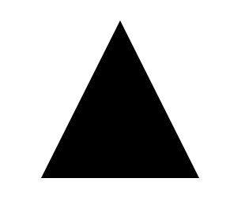

SVG 技术之 - 路径
近期在进行“连接世界”项目，其中用到了很多关于自定义图形的类库和方法，关于项目的详情，在这里我不多说。回到正题，那么这篇文章主要向大家介绍 SVG 中 path 标签的用法。SVG 说复杂也复杂，细节上的掌控非常精细，但其语法格式却并不难理解，所以相对来说又很简单。直到 HTML5 出现的今天，使用 Canvas 的人越来越多，但 SVG 还是不会被其取代，毕竟各有其优势和劣势，具体用到哪里怎么样，就依各位客官老爷们的心意了。
先来一个小例子：
<svg height="100px" width="100px" version="1.1" xmlns="http://www.w3.org/2000/svg">
<path d="M50 0 L0 100 L100 100 Z"></path>
</svg>

上面这段代码中的 path 标签绘制了一个三角形，其中主要由属性 “d” 来控制绘制图形的具体形状。“d” 属性的属性值可以分成一段一段的形式，每一段都是这样的形式 “X POSX POSY”，其中 “X” 表示对 path 标签提出的命令，可以理解为告诉 path 标签下一步应该绘制什么图像，或者是应该怎样绘制；后边的两个 POS 表示下一个将要绘制的点，POSX 表示点的 X 坐标，POSY 表示点的 Y 坐标。命令 X 如果大写，表示绝对定位，小写则表示相对定位。
在这些所有的命令中，有一个命令后面不需要或者说不可以加任何的位置信息，那就是 “Z” 命令，“Z” 命令表示闭合此段曲线，当 path 标签“运行”到这个命令时将会结束绘制，并将此命令的前一个点与开始的第一个点进行连接以闭合曲线，所以 “Z” 命令一般用在绘制的结尾处。
同样的 path 标签里也可以嵌入 style 属性来制定该段绘制的图形外观的。
这里给出所有的 path 标签“命令”供参考：
- M : 画笔移动到某处；
- L : 绘制直线到某处；
- H : 绘制水平线到某处；
- V : 绘制垂直线到某处；
- C : 绘制曲线到某处；
- S : 绘制平滑曲线到某处；
- Q : 绘制二次 Belzier 曲线到某处；
- T : 绘制光滑二次 Belzier 曲线到某处；
- A : 绘制椭圆弧线到某处；
- Z : 关闭标签；